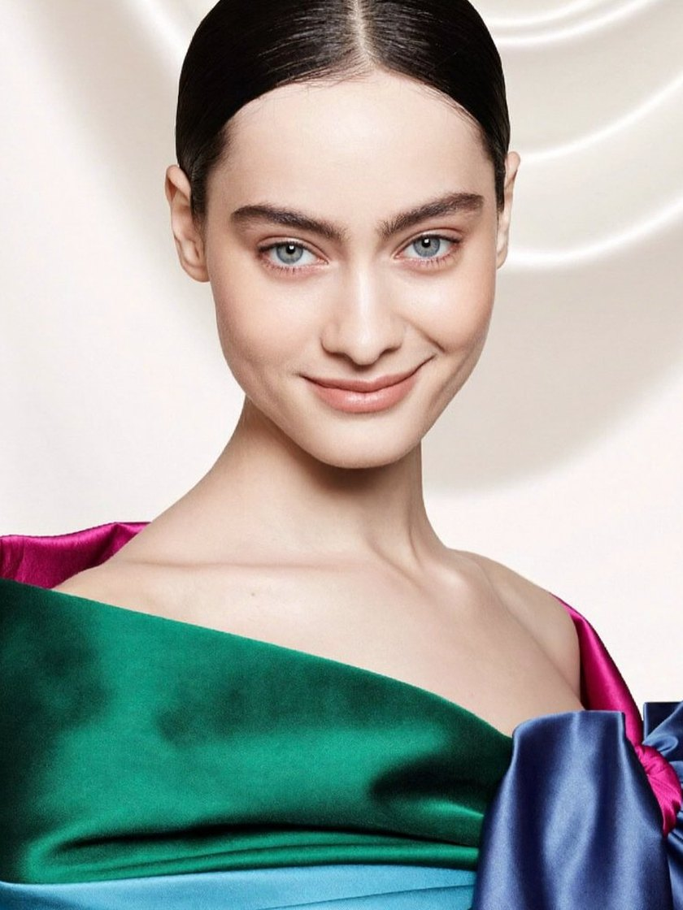
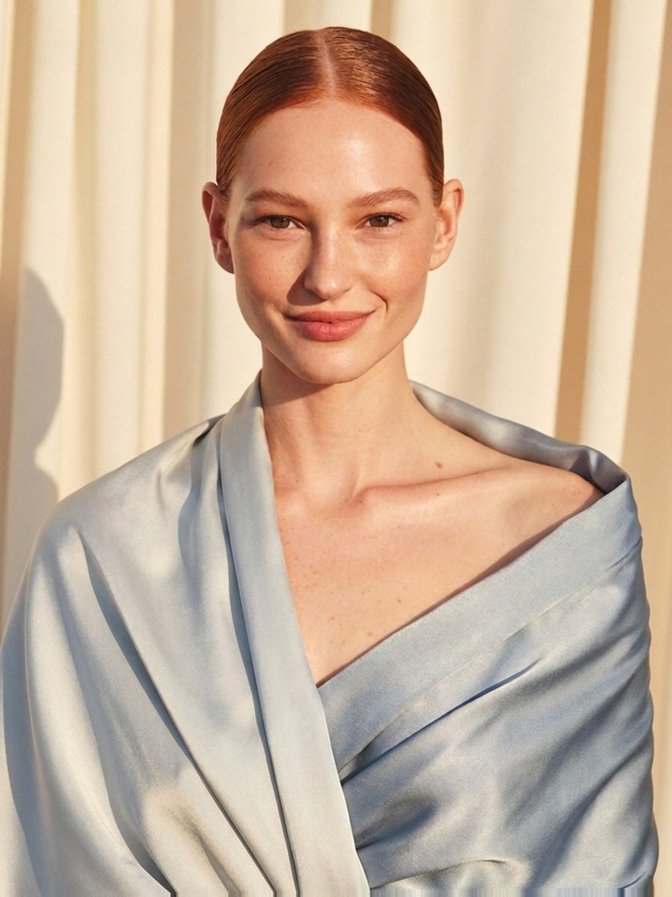
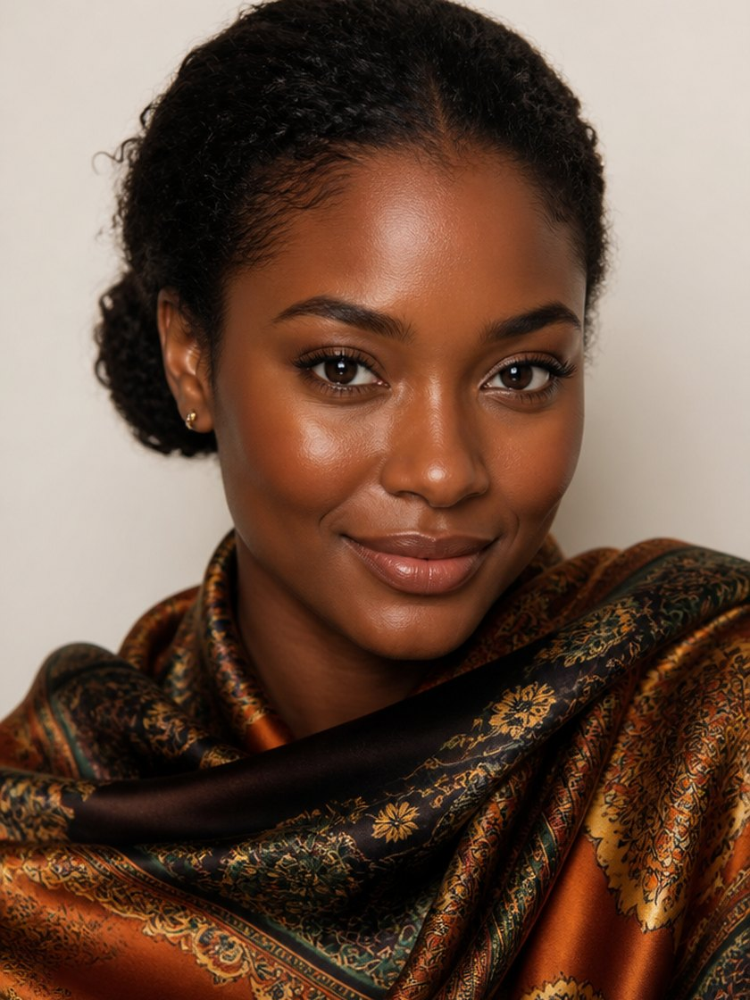
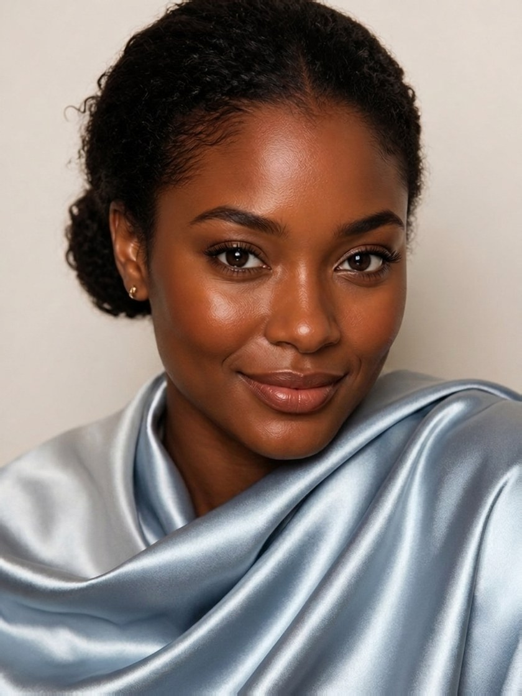
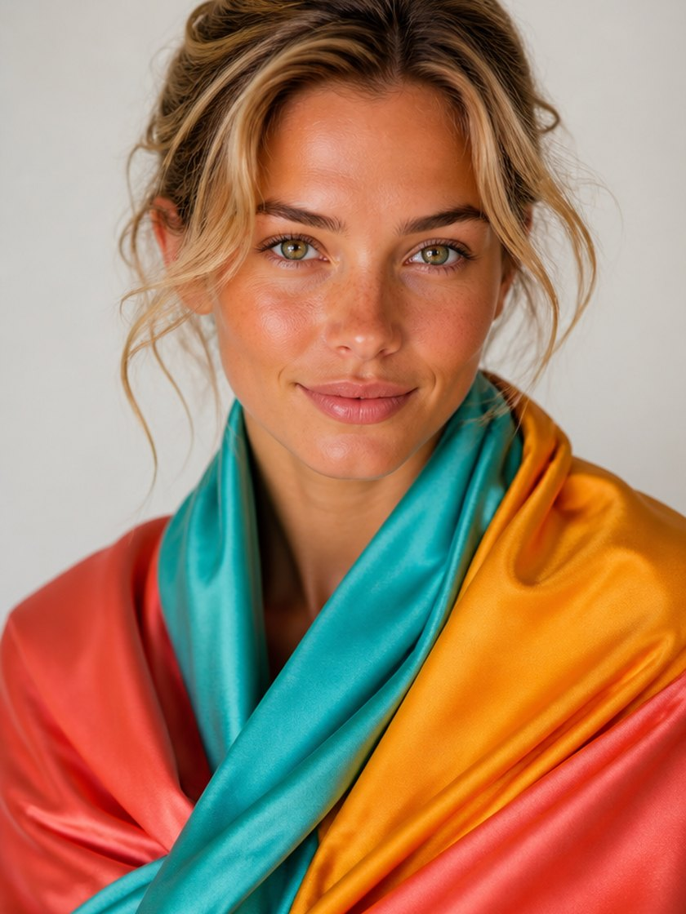
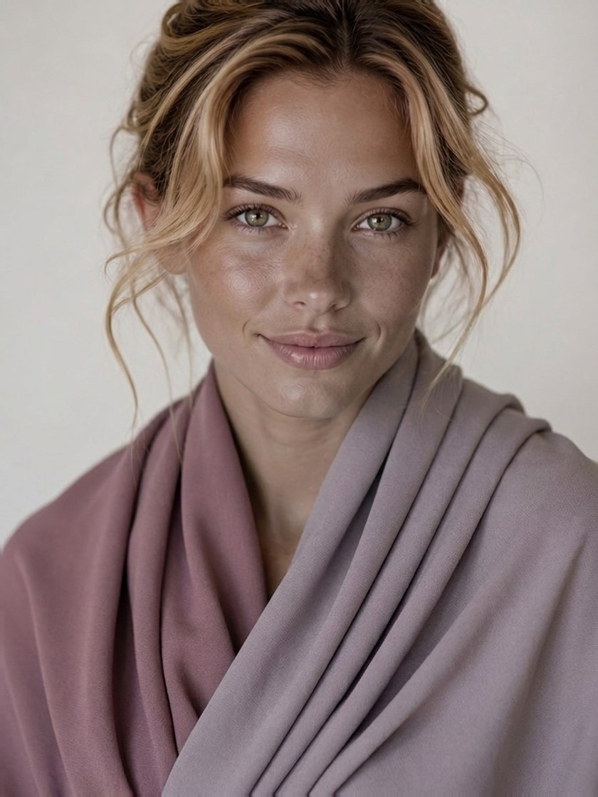

Reading your colors…
Checking your light
A few quiet questions, one selfie, and your exact 12-season palette — the colors that light you up, and the ones to retire. The analysis stylists charge $300 for.


Same face, same light. Only the colors changed.
Drag each mirror. Same photo, same light — only the palette changes.




Styled demonstrations of the 12-season system · your season is found from your quiz + selfie
Five questions an analyst would ask first — metals, veins, sun response, contrast, whites. Each answer narrows where your coloring lives.
One daylight photo, measured entirely on your device — it never leaves your phone. This is the primary read: your undertone, your depth, and the contrast between your hair and skin — measured from pixels, the way an analyst reads a draping.
Undertone, depth, chroma — three axes, twelve seasons. Yours is the one where all three agree, and every shade in your palette is chosen for it.
The 12-season system — the same framework behind a $200–400 in-person draping.
One-time $9 · 30-day money-back guarantee · no subscription
Your season and power colors come free. The report is there if you want the rest.
This is what turns your answers into an exact palette. Two minutes near a window is all it takes.
Analyzed in your browser, on your phone. Never uploaded, never stored — never seen by anyone, including us.
The analysis a salon drapes for $200–400.
Press and hold the card to save it, then post it anywhere.